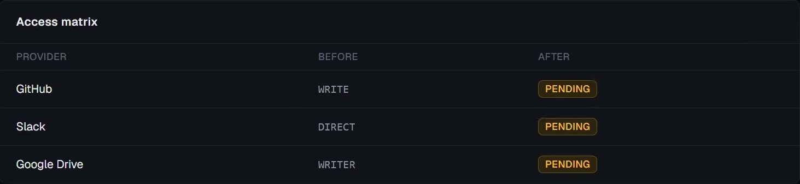
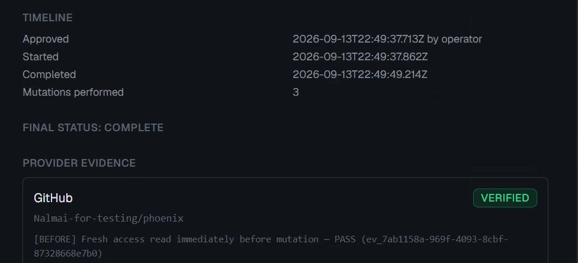

ZeroTrace: Verified Project Offboarding Agent
CodeHackathon · 6-hour build Team of 2 · with Laiba Sep 2026
Zero remaining access. Zero destroyed history. Zero false success.
When someone leaves a project, their access is scattered across many tools. Offboarding scripts usually report success because an API returned HTTP 200, but that proves nothing. ZeroTrace revokes a departing person's access to one named project across GitHub, Slack and Google Drive, and proves it. After every change it reads each provider again, checks the removal independently of the write response, and refuses to report success unless every requirement was actually confirmed. Everything the person authored (commits, issues, messages, files) is preserved.
1) How It Works
- Conversational intake: the agent holds a real back-and-forth with the operator (e.g. "what's her email?") instead of failing on incomplete input. The LLM is the only non-deterministic part, and it is limited to a fixed JSON schema.
- Scope Lock: a deterministic policy engine checks every change against the approved plan before it reaches any provider: right person, right resource, right plan hash, allow-listed operations only.
- Independent verification: "verified" always means the provider's live state was read back after the change, not just that the change was attempted.
- Success is earned: a priority-ordered status engine (
SAFETY_VIOLATION > BLOCKED > INCOMPLETE > UNVERIFIED > COMPLETE) only reportsCOMPLETEwhen every obligation and safety invariant holds. If the LLM is unavailable, it fails closed.
2) In the App


3) Reliability Evidence
All scenarios were run against a live sandbox (a real GitHub organisation, Slack workspace and Google Drive account, with no mocked adapters) and then re-checked directly against each provider's own API.
| Scenario | What it proves | Result |
|---|---|---|
| Complete revocation | Real revocation across all providers, plus independent read-back | COMPLETE |
| Blast-radius containment | An unrelated project and another user are untouched | COMPLETE: before/after identical |
| Idempotency | Re-running a completed request sends no changes at all | COMPLETE: empty operation log |
| Ambiguity block | An ambiguous project name is blocked before any change | BLOCKED: candidates listed |
Validation found and fixed real bugs: a fallback path that could authorise a run when the LLM was unavailable, a database constraint that broke legitimate retries, a GitHub search-API quirk, and a prompt that wrongly flagged ordinary requests as out of scope.
4) Tech Stack
Next.js (App Router) · TypeScript · React · Tailwind · Prisma (SQLite locally, Postgres when deployed) · Octokit ·
@slack/web-api · googleapis · Anthropic / OpenAI LLM with Zod-validated, schema-constrained output · live
run updates streamed to the UI · redacted, hashed evidence records · passcode-gated Vercel deployment.